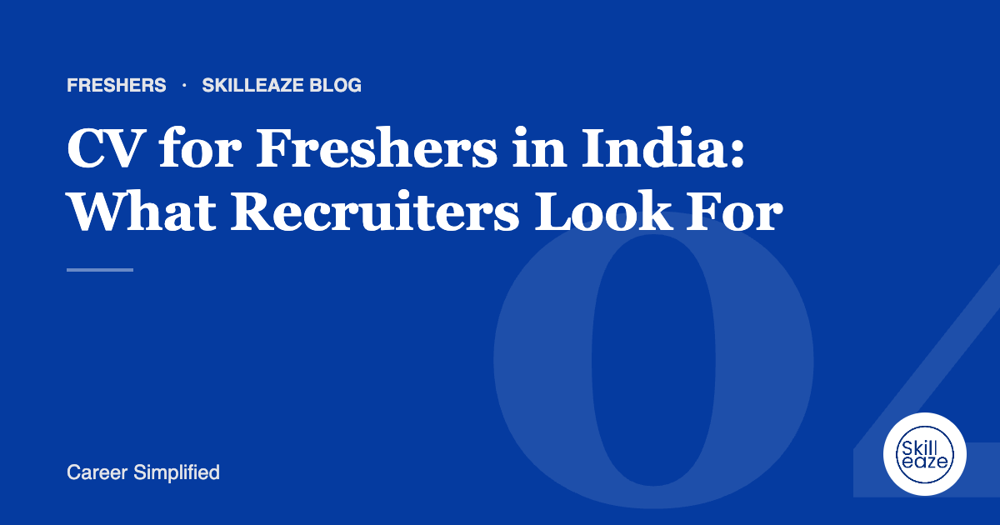

CV for Freshers in India: What Recruiters Look For
How to build a strong first CV from education, projects, internships and skills.

Lead with a clear objective
State the role you want and the skills you bring in two lines. Avoid generic lines like 'seeking a challenging position'.
Make projects do the work
Treat academic and personal projects like jobs: what you built, the tools you used and the result. Recruiters at Indian IT and product companies read this closely.
Our team writes your ATS CV from your real experience. INR 490 · AED 20 · USD 6 (50% off).
Show internships and training
Even short internships count. Describe what you did and learned, not just the company name.
Keep skills honest and specific
List tools and technologies you can actually use. Group them (programming, tools, languages) for easy scanning.
One page is enough
Most freshers should stick to one page. Remove school-level details unless the employer asks for them, and skip date of birth, religion and full address.
Frequently asked questions
What should a fresher put on a CV with no experience?
Lead with education, then projects, internships, certifications and relevant activities. Describe what you built or contributed, the tools you used and what changed as a result. Recruiters hiring freshers look for evidence of learning ability, initiative and basic professional skills.
Should I include my percentage or CGPA?
Yes, if it is good or if the employer asks for it, which many Indian campus and mass recruiters do. Show your degree, college, year and score clearly. If your score is modest, keep it accurate and let your projects and skills carry more of the page.
Do I need personal details like date of birth?
Most private employers no longer need date of birth, religion or marital status on a CV. Include your name, phone, email, city and LinkedIn. Some government or specific applications ask for more details; follow their format when they do.
General guidance only. Employer requirements vary; always follow the job advert.
 Chat on WhatsApp
Chat on WhatsApp